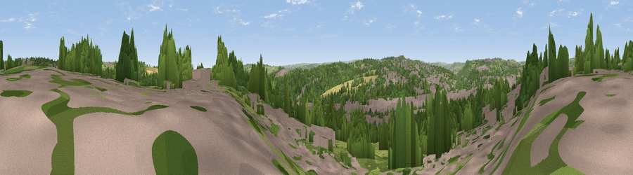

Viewpoint near Clifton
#25927 in England · top 49% of its area beats it · near Clifton · footpathWhere it is
The exact computed spot (SE 15925 22975). Click the marker for map links.
Public access: a public right of way passes within 28 m of this spot. Computed from Natural England's CRoW access layer and OpenStreetMap rights of way — not the legal definitive map. Always verify locally.
The view, rendered

A 360° render of this exact spot computed from the terrain model, tree cover and land cover — summer colours, afternoon light, calibrated against photographs of famous viewpoints. Real trees, hedges and buildings will differ in detail.
The panorama
Grey silhouette: terrain skyline in each direction (720 bearings, Earth curvature and refraction included). Dashed green: skyline with trees (+15 m) and buildings (+8 m) as obstacles. Blue strip: how far the ground is visible on each bearing.
Where the view opens
Wedge length = distance to the farthest visible ground on that bearing (vegetation-aware). Rings at 10, 25 and 50 km.
What fills the view
42% woodland · 32% built-up · 22% grassland · 4% cropland
Angular shares of the visible panorama (visual magnitude), not map area. Landscape diversity 0.52 (0–1 Shannon).
Key numbers
More beautiful places nearby
The staircase of upgrades: each row has a higher view potential than everything closer. Driving times are estimates from straight-line distance, calibrated against real road routing — check an actual route before setting out.
| Place | Direction | Drive | Score |
|---|---|---|---|
| Viewpoint near Hartshead | E · 3 km | ~7 min | 58.8 |
| Fixby Ridge | SW · 5 km | ~11 min | 65.7 |
| Viewpoint near Kirkheaton | SSE · 5 km | ~11 min | 68.0 |
| Viewpoint near Stump Cross | WNW · 9 km | ~17 min | 71.5 |
| Viewpoint near Jackson Bridge | S · 16 km | ~28 min | 73.5 |
| Viewpoint near Otley | NNE · 22 km | ~36 min | 77.5 |
| Darwen Hill | W · 48 km | ~69 min | 80.7 |
| White Brow | WSW · 51 km | ~72 min | 82.9 |
53.70297, -1.76025 · source: screening · position refined by local search. Computed location — check access rights before visiting.